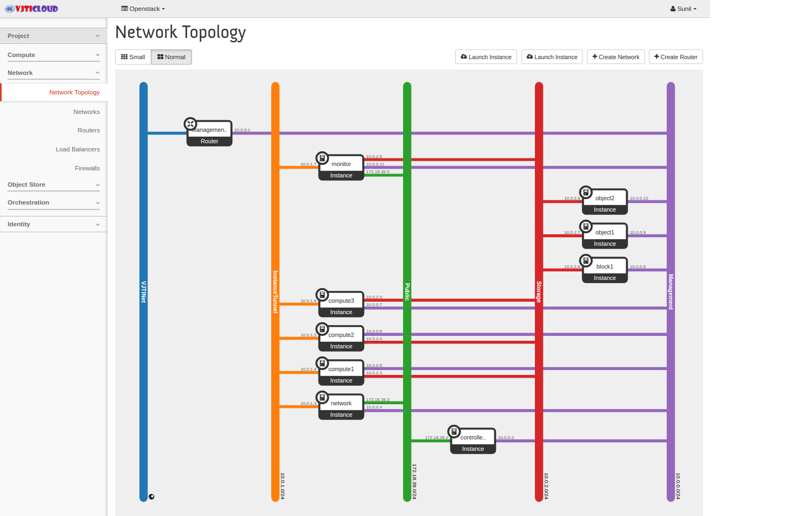

Final Demonstration¶
#. Demo¶
- Launch an instance
- Test without floating IP
- Assign Floating IP
- Add ICMP rule
- Add SSH rule
- Create Volume
- Attach-Detach Volume
- Shutdown
#. Admin Dashboard¶
- Show admin dashboard options
- Hypervisors and available physical capacity
- Running Services and their status
#. Windows¶
- Create windows machine
- Windows 32/64 bit
- Attach volume format it
- Copy some files
- Detach and attach to another
- Shutdown
#. Vertical scaling¶
- Create VM with smallest flavor
- Scale up by resizing it to bigger flavor with same disk size
- Scale down by resizing it to smaller flavor with same disk size
- Delete instance
#. OpenStack Network-aaS¶

- Show Network topology
- It can be called Network as a Service.
- As you can see in above figure, it is very hard to create physical network topology, but with cloud you can create complex networks in minutes.
{kind=link}
#. FWaaS¶
- Without firewall ping connection
- After Adding firewall
#. LBaaS¶

- Start the servers
- Show demo
#. PaaS¶
- Docker is known as Platform as a service, well kind of. To use docker one has to have knowledge of docker. So, we created custom ubuntu image to provide docker as a service to our users.
#. SaaS¶
- Show Owncloud to demonstrate Software as a Service.
- Create Owncloud docker instance
- Open port on host
- Access Owncloud using floating IP
- Upload file to Owncloud
- Download file from Owncloud
#. Live migration¶
- Create an instance
- Show physical server on which instance is running
- Live migrate
- Show that live migration is successful